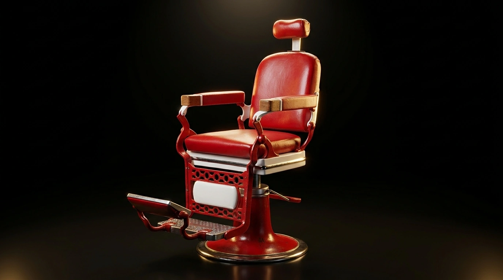
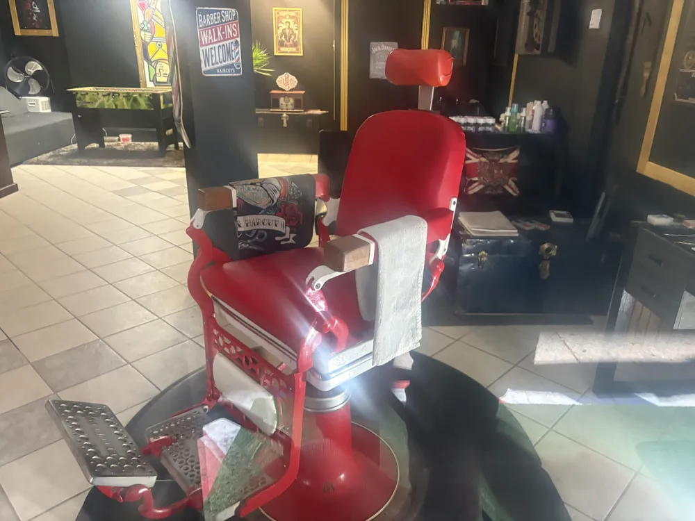
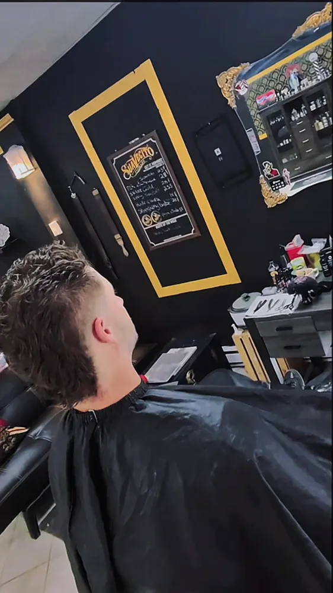
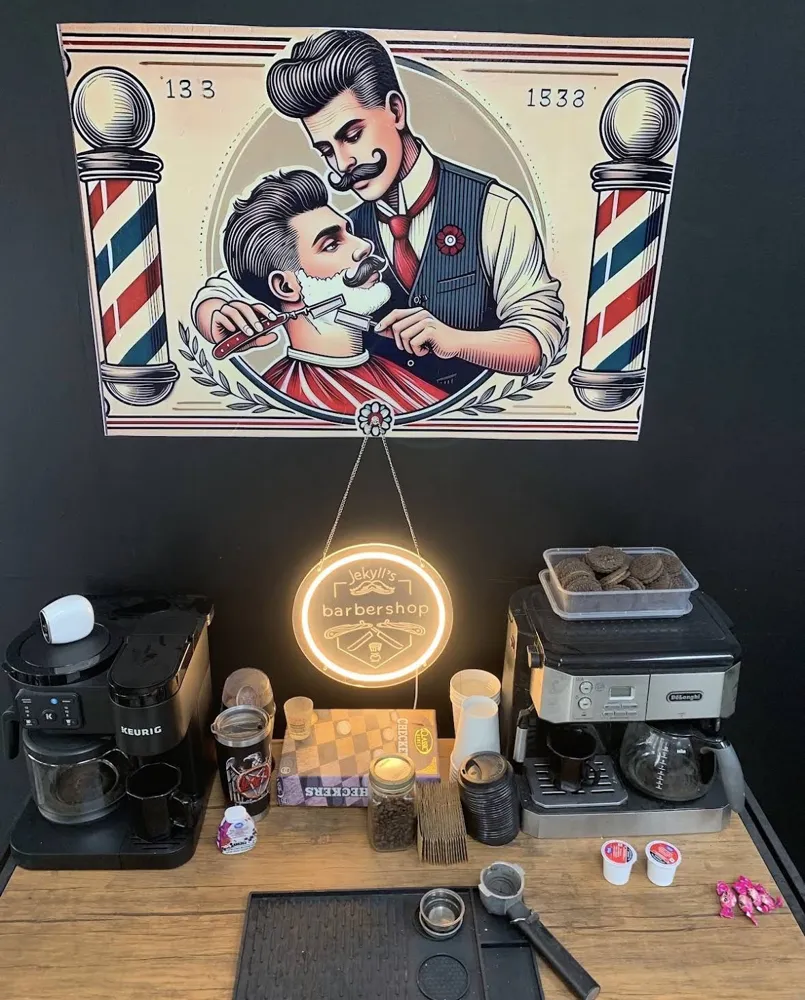
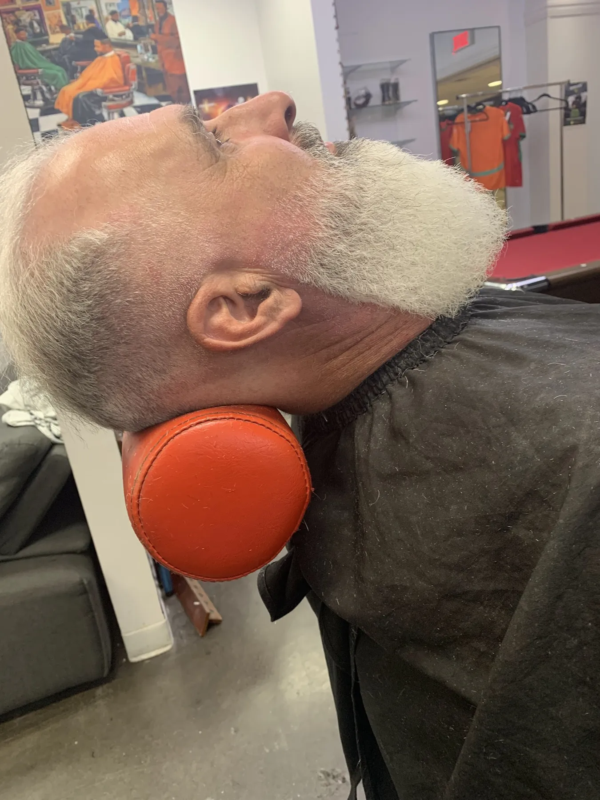

Une seule chaise. Un seul barbier. Depuis 2015, rue Royale, à Trois-Rivières. Rasage à la serviette chaude, maîtrise du coupe-chou, skin fade. 5,0 sur 5 sur Google.
Chad, maître barbier
Une seule chaise. Un seul barbier. Une confiance durable.

Plus d’une décennie d’expérience et une maîtrise absolue du coupe-chou. Expertise suprême du Skin Fade et coupes actuelles. Chad perpétue le grand rasage traditionnel. Depuis 2015.






Services
Les services
Prix de la réservation en ligne du salon.
-
55 $

Rasage à la serviette chaude
Barbe aux lames, savon de Marseille et coupe. 45 min
-
50 $
Tête et barbe à la lame
Serviette chaude
-
35 $

Skin fade ou coupe actuelle
30 min
-
27 $
Tête rasée à la lame
-
30 $

Taille de barbe à la lame
Contours et serviette chaude. 30 min
-
25 $
Contour ou rasage clipper
-
50 $
Barbe et cheveux, finition clipper
-
60 $
Lissant brésilien
Avis
5,0 sur 5, 32 avis Google
« Meilleur barbier dans la région ! Disponible, à l’écoute, perfectionniste ! »
VLSF
« Meilleur service reçu… J’ai une forte barbe et les conseils qu’il m’a donnés sont toujours impeccables. »
Junior Desaulniers
« Barbier très sympathique et minutieux ! Très beau salon aussi ! »
Steven Dery
Questions
Questions fréquentes
Quand le salon est-il ouvert ?
Le mardi, le salon ouvre à 13 h. Pour les autres jours, les plages libres se voient dans la réservation en ligne.
Combien coûte une coupe pour un ado ?
27 $. Pour un enfant de moins de 12 ans : 20 $.
Y a-t-il un rabais pour les Forces armées ?
Oui : 20 % de rabais sur tous les services pour les Forces armées canadiennes et les vétérans, avec la carte.
Où est le salon ?
933, rue Royale, centre-ville de Trois-Rivières (Québec) G9A 4H7.
Comment réserver ?
En ligne, avec le bouton Réserver, ou par téléphone au 819-448-8663.
Vendez-vous des produits pour la barbe ?
Oui, en vente au salon : l’huile à barbe Canadian Redneck (25 $), le baume et la cire Canadian Redneck (20 $).
Prix
Tous les prix
Tirés de la page de réservation du salon (Square) le 8 novembre 2026.
À la lame
- Rasage à la serviette chaude Barbe aux lames, savon de Marseille et coupe. 45 min55 $
- Tête et barbe à la lame Serviette chaude50 $
- Taille de barbe à la lame Contours et serviette chaude. 30 min30 $
- Tête rasée à la lame27 $
Cheveux
- Skin fade ou coupe actuelle 30 min35 $
- Barbe et cheveux, finition clipper50 $
- Contour ou rasage clipper25 $
- Lissant brésilien60 $
Famille et amis
- Ado27 $
- Enfant (moins de 12 ans)20 $
- Sortie père et filsSur demande
- Duo deux amisSur demande
Extras et produits
- Black mask, avec une coupe8 $
- Cire, oreilles ou nez4 $
- Huile à barbe Canadian Redneck En vente au salon25 $
- Baume et cire Canadian Redneck En vente au salon20 $
20 % de rabais sur tous les services pour les Forces armées canadiennes et les vétérans, avec la carte.

Réserver
Ici, la tradition coupe toujours juste.
Réserver en ligne 819-448-8663933, rue Royale, centre-ville de Trois-Rivières (Québec) G9A 4H7
Ouvre à 13 h le mardi.